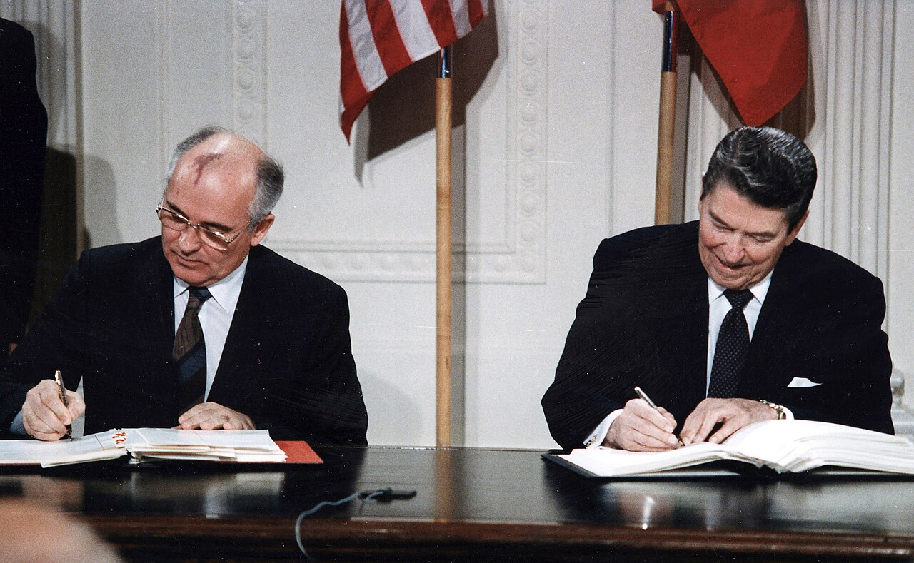
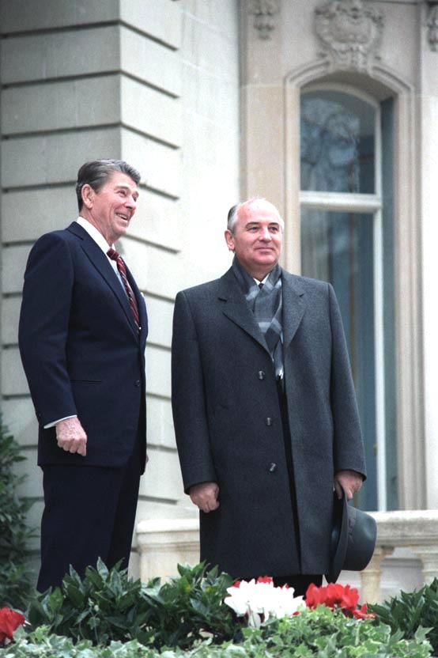
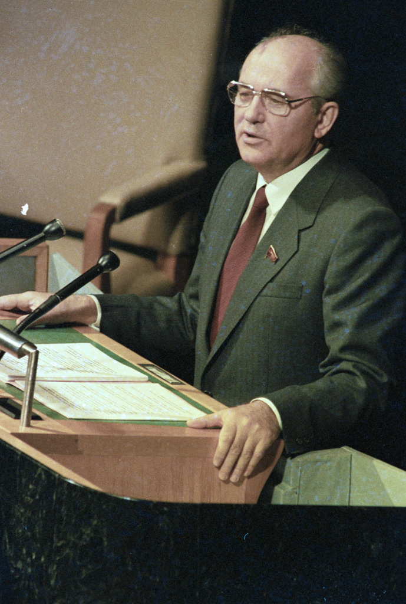

출처: Wikimedia Commons — Leo Medvedev · CC BY-SA 4.0
⏱️ 10초 카드 · 냉전을 끝낸 개혁가 (1931~2022)
글라스노스트(개방)페레스트로이카(개혁)냉전 종식소련 해체
여는 질문 — 나라를 살리려던 개혁이, 오히려 나라를 무너뜨릴 수도 있을까?
이름
한국어미하일 고르바초프
원어Михаил Горбачёв
실제 발음미하일 고르바초프
로마자Mikhail Gorbachev
영어권Mikhail Gorbachev
소련 · 1931~2022
왜 이 사람인가
냉전을 '전쟁이 아니라 개혁과 양보로' 끝낸 결정적 인물이에요. 동유럽에 탱크를 보내지 않은 그의 선택이 1989년의 평화로운 변화를 가능하게 했죠. 좋은 의도와 통제 불능의 결과를 함께 보여 주는 인물이에요. (냉전 → 장벽 붕괴 섹션)
생애
남부 시골 농가에서 태어나 공산당 안에서 차근차근 올라갔어요. 1985년, 비교적 젊은 나이(54세)에 소련 최고 지도자가 됐죠. 그는 소련 경제가 군비 부담과 비효율로 병들어 있음을 알았고, 근본적인 개혁이 필요하다고 봤어요.
그의 두 무기는 '글라스노스트(개방)'와 '페레스트로이카(재건)'였어요. 언론의 자유를 넓히고 경제를 뜯어고치려 했죠. 서방과는 군축에 합의하고(1987년 INF 조약), 무엇보다 동유럽이 스스로 길을 정하도록 군대를 보내지 않았어요. 그 결과 1989년 베를린 장벽이 평화롭게 무너졌죠.
하지만 개혁은 그의 의도를 넘어섰어요. 자유가 열리자 억눌렸던 불만과 민족주의가 터져 나왔고, 1991년 결국 소련은 해체됐어요. 그는 냉전을 끝낸 공로로 노벨평화상을 받았지만, 많은 러시아인에게는 '위대한 나라를 잃은 사람'으로 미움받았어요. 같은 사람을 두고 평가가 이토록 갈리는 인물도 드물죠.
자료로 보기 — 유묵·사진

INF 조약 서명 (1987)1987년 백악관, 고르바초프(왼쪽)와 미국 대통령 레이건(오른쪽)이 중거리 핵미사일을 없애는 INF 조약에 서명해요. 군축의 큰 돌파구였죠.출처: Wikimedia Commons — White House Photographic Office · 퍼블릭 도메인

제네바 정상회담 (1985)1985년 제네바, 취임 첫해 레이건(왼쪽)과 만난 고르바초프(오른쪽). 두 초강대국 지도자가 대화의 물꼬를 튼 자리였어요.출처: Wikimedia Commons — White House Photo Office · 퍼블릭 도메인

연설하는 고르바초프개혁(페레스트로이카)과 개방(글라스노스트)을 호소하는 고르바초프. 그의 말은 소련 안팎을 통째로 흔들었어요.출처: Wikimedia Commons — Yuryi Abramochkin / РИА Новости · CC BY-SA 3.0
남긴 말
“우리는 더 이상 이렇게 살 수 없습니다.”
페레스트로이카(개혁)를 시작하며 소련 사회의 정체와 위기를 진단한 말이에요. · 출처: 고르바초프, 페레스트로이카 관련 발언
“삶은 늦게 오는 자를 벌한다.”
동유럽의 변화를 막지 말라는 뜻으로 인용된 말. 시대의 흐름을 거스르지 말라는 경고였죠. · 출처: 1989년 동베를린 방문 무렵 (널리 인용됨)
“나는 내 인생을 후회하지 않는다. 자유 없는 나라를 자유롭게 하려 했다.”
훗날 자신의 개혁을 돌아보며 한 말이에요. · 출처: 고르바초프 회고
연표
1931소련 남부 스타브로폴 농가 출생
1985소련 최고 지도자 취임 — 개혁 시작
1987미국과 INF 조약 — 중거리 핵미사일 폐기 합의
1989동유럽 불간섭 — 베를린 장벽 평화롭게 붕괴
1990노벨평화상 · 독일 통일
1991소련 해체 — 사임 · 2022 별세
시골 농가에서 냉전을 끝낸 자리로
남부 농가의 아들이 소련 최고 지도자가 되어, 개혁으로 한 시대를 끝내고 나라의 해체까지 지켜본 길이에요.
고향에서 크렘린, 정상회담장을 거쳐 다시 크렘린에서 한 시대를 닫기까지 — 실제 좌표 위에 표시했어요.
빛과 그림자무력 없이 냉전을 끝내고 동유럽의 자유화를 막지 않은 결단은 세계사적이었어요(노벨평화상). 하지만 그의 개혁은 통제를 잃어 소련 붕괴와 극심한 경제 혼란으로 이어졌고, 그 때문에 러시아 안에서는 지금도 평가가 엇갈려요. '서방의 영웅, 러시아의 죄인'이라는 두 시선을 함께 봐야 해요.
더 깊이 (고등·일반)
페레스트로이카의 역설 — 살리려다 무너뜨리다
고르바초프의 목표는 소련을 '해체'가 아니라 '개혁해서 살리는' 것이었어요. 하지만 일단 표현의 자유(글라스노스트)가 열리자, 억눌렸던 불만과 민족주의가 한꺼번에 터져 나왔죠. 경제 개혁은 더디고 혼란스러웠고, 결국 통제할 수 없는 흐름이 됐어요. '조금 열었더니 둑이 무너졌다' — 개혁의 역설을 보여 주는 대표 사례예요.
참고: 페레스트로이카와 소련 해체
탱크를 보내지 않은 결정
1989년 동유럽에서 잇따라 공산 정권이 흔들렸을 때, 이전 소련 지도자들(헝가리 1956·체코 1968)은 탱크로 진압했어요. 하지만 고르바초프는 군대를 보내지 않았죠. 이 '불간섭' 결정이 베를린 장벽이 큰 유혈 없이 무너질 수 있었던 핵심이에요. 냉전이 '평화롭게' 끝난 데에는 이 선택의 무게가 컸어요.
참고: 고르바초프의 동유럽 불간섭(시나트라 독트린)
갈라진 평가 — 영웅인가, 죄인인가
서방에서 고르바초프는 냉전을 끝낸 영웅이자 노벨평화상 수상자예요. 하지만 많은 러시아인에게는 강대국 소련을 잃고 1990년대의 극심한 혼란을 부른 사람으로 기억되죠. 같은 행동이 보는 위치에 따라 정반대로 평가되는 것 — 역사를 '한쪽 눈'으로만 보면 안 되는 이유예요.